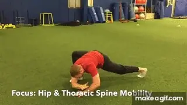
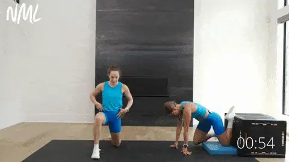
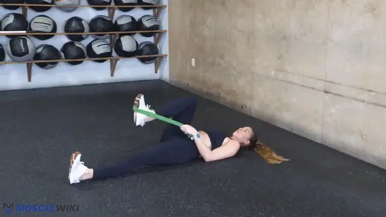
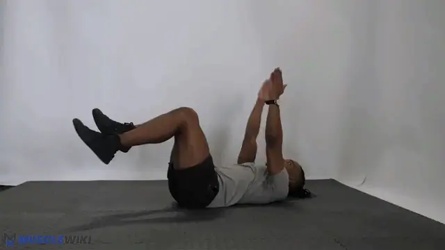
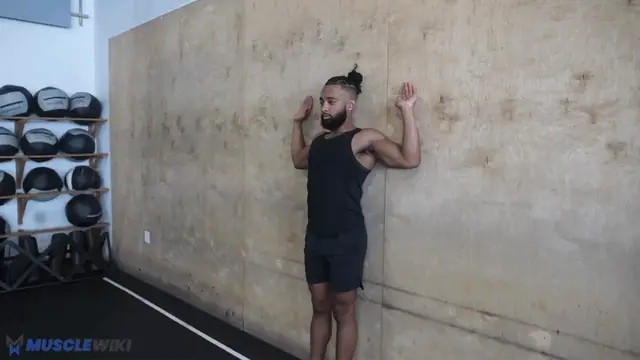

-

0 World's Greatest Stretch
3 per side, flowing
Warmup only — wakes up the joints. Lunge forward → plant inside hand → rotate top arm to the ceiling → push hips forward → shift hips back, straighten the front leg and fold over it (brief hamstring stretch) → return. Alternate sides each rep.
-

1 Couch Stretch
40s per side
Anterior Pelvic Tilt
Muscles: Psoas + rectus femoris · Feel: 6–7/10 stretch in the front of the hip
- Rear knee against the wall, shin vertical against the surface, front foot planted (~90°)
- Squeeze the back glute HARD, push hips forward, tuck the tailbone under (posterior tilt)
Key cue: if it feels easy, you're arching your back — the tuck is everything. (This is the one you said you can feel progressing — keep at it.)
-
No animation yet 2 Butterfly Stretch
45s
Tight Hips — Adductors (inner thigh)
Feel: Stretch through the inner thighs/groin.
- Sit, soles of the feet together, let the knees fall open
- Sit tall (don't slump), gently press the knees down with the elbows, lean forward slightly from the hips for more
Notes
Why it replaced the 90/90: the 90/90 was meant to open the hips but you couldn't get into the position. Butterfly hits the inner-thigh half of that goal and is easy to get into and scale.
-
No animation yet 3 Supine Figure-4
30s per side
Tight Hips — Glutes / External Rotators (outer hip)
Feel: Stretch deep in the outer hip/glute.
- Lie on your back, cross one ankle over the opposite knee (figure-4 shape)
- Reach through and pull the supporting thigh toward your chest
- Scale by how far you pull; switch sides
Notes
This is the outer-hip half of the old 90/90. Together, butterfly + figure-4 cover what the 90/90 did, with none of the awkward positioning.
-

4 Supine Hamstring Stretch
30s per side
Tight Hamstrings
Muscles: Hamstrings · Feel: 6–7/10 stretch in the back of the thigh.
- On your back, one leg flat on the floor, loop a towel/belt around the other foot
- Gently pull the leg toward you, knee straight; keep the non-stretching leg flat (if it lifts, the hip flexors are compensating)
Notes
Why supine: lying down pins the spine flat and removes the back-rounding cheat. 30s is as effective as 60s for flexibility. (Essential and working for you — kept as-is.)
-

5 Dead Bug
8 per side, alternating
Anterior Pelvic Tilt (anti-extension core)
Muscles: Transverse abdominis + rectus abdominis · Feel: abs working to keep the back flat.
- Face-up, arms to the ceiling, knees at 90°, press the lower back FLAT into the floor
- Slowly extend the opposite arm + opposite leg, return, alternate
Notes
Feeling it in the abs is correct — that's the point. It's an anti-extension drill, so abs-dominant sensation = working. It helps lordosis but isn't a standalone fix: the glute side of the equation is handled by your hip thrusts / Bulgarians on leg day. The moment the lower back lifts off the floor, you've gone too far.
-
No animation yet 6 Hands-Elevated Child's Pose
45s
Lat + Shoulder-Flexion stretch
Feel: Stretch through the armpits/sides of the upper back — NO pinching.
- Kneel and place your hands on a chair seat (~knee height), arms straight
- Hinge at the hips and let the chest sink down between the arms, head relaxed
Notes
Why it replaced the puppy pose: hands behind the head + sinking into deep overhead flexion was compressing your shoulder joint — that "pain" was a pinch, not a stretch. Hands on the seat (not behind the head) gives the same lat stretch without jamming the shoulder. If anything pinches, raise the surface / reduce depth.
-

7 Wall Angels
10 reps, 2s up / 2s down
Rounded Shoulders
Muscles: Lower/mid traps, serratus, rhomboids · Feel: hardest at the top, keeping everything on the wall.
- Back flat on the wall, feet ~15 cm out, arms in "cactus" (elbows 90°, touching the wall)
- Slide the arms overhead, keeping wrists, elbows AND lower back on the wall
Notes
The wall is feedback: if the elbows/wrists come off, work only the range you can honestly keep in contact. (A must — kept.)
About postural correction
Targets anterior pelvic tilt (lordosis), tight hips, tight hamstrings, and rounded shoulders. Two changes from your Week-3 feedback: the 90/90 → split into two easier stretches (butterfly + figure-4, since you couldn't get into the 90/90 position), and elevated puppy pose → hands-elevated child's pose (the puppy was pinching your shoulders, not stretching them).
Time Breakdown
| # | Exercise | Time |
|---|---|---|
| 0 | WGS primer | ~80s |
| 1 | Couch stretch (40s/side) | ~85s |
| 2 | Butterfly | ~50s |
| 3 | Supine figure-4 (30s/side) | ~65s |
| 4 | Supine hamstring stretch (30s/side) | ~65s |
| 5 | Dead bug | ~60s |
| 6 | Hands-elevated child's pose | ~50s |
| 7 | Wall angels | ~50s |
| — | Total | ~8 min |
Quick Reference
Anterior pelvic tilt → Couch stretch + Dead bug (+ glutes on leg day)
Tight hips (inner) → Butterfly stretch
Tight hips (outer) → Supine figure-4
Tight hamstrings → Supine hamstring stretch
Lat / shoulder flexion → Hands-elevated child's pose → dead hang (TS900)
Rounded shoulders → Wall angels
Thoracic rotation → WGS primer (maintenance)